Atmospheric Ozone Climatology for Use in General Circulation Models
Xin-Zhong Liang and Wei-Chyung Wang
Atmospheric Sciences Research Center, State University of New York at Albany
|
|
|
| Abstract | Composite 3-D O3 Climatology |
A three-dimensional global, monthly mean atmospheric ozone climatology for use in general circulation models (GCMs) is constructed based on recent satellite and ozonesonde measurements. The present report describes in details the construction of this climatology, and discusses the data uncertainties and future refinements.
Atmospheric ozone (O3) absorbs solar radiation, in particular, the ultraviolet radiation that controls basic biological processes. It also traps outgoing longwave radiation, thus acting as a greenhouse gas. The presence of O3 is therefore important not only to the biological activities on the Earthís surface but also to the radiation budget and climate (Bower and Ward 1982). Ozone observations have been substantially expanded, especially since the late 1970s when satellite measurements became available. The atmospheric O3 distribution has been changing, notably decreases in the lower stratosphere around the globe and increases in the upper troposphere in the mid-to-high latitudes of the Northern Hemisphere. These changes can significantly perturb the radiative forcing and thus modify the Earth-atmosphere climate system (WMO 1994). General circulation model (GCM) studies have shown that an accurate O3 representation is required not only to simulate a realistic present climate but also to study potential climate responses to O3 changes (Hansen et al. 1993; Wang et al. 1995; Liang and Wang 1995).
However, the O3 climatologies used in most GCMs are based on measurements before 1970s and, at the best, limited early satellite measurements. In general, these climatologies are represented by latitude-altitude variations of O3 mixing ratio and/or longitude-latitude distributions of column total ozone amount. Among the 30 GCMs participating in the Atmospheric Model Intercomparison Project (AMIP; Gate 1992; Phillips 1994), one-third use O3 latitude-altitude variations that are obtained from a few yearsí ozonesonde observations over North America (Herring and Borden 1965; Dopplick 1974; Wilcox and Belmont 1977). Another one-third include O3 latitude-altitude variations that are partly derived from satellite measurements during a short period (Dütsch 1978; McPeters et al. 1984; Rosenfield et al. 1987; Keating et al. 1987). For the rest of GCMs, some incorporate only the observed total ozone distributions (London et al. 1976; Bowman 1988), while others employ simple model prediction or parameterization.
Recently, we have replaced the zonally symmetric O3 climatology (Dütsch 1978) in the SUNYA/NCAR GCM with more contemporary measurements that include longitudinal variations (Wang et al. 1995). This new three-dimensional climatology is constructed from long-term records of TOMS (total ozone mapping spectrometer) and SAGE (stratospheric aerosol and gas experiment) II satellite data as well as ozonesonde measurements. The O3 update has been found to substantially ameliorate regional climate simulations (Wang et al. 1995). In addition, when the O3 trend estimated from TOMS is imposed upon the new climatology in the lower stratosphere, the GCM simulates quite realistic climate responses when compared with observations, in particular, the lower stratospheric cooling signals that were identified with O3 depletion during 1979-1992 (Liang and Wang 1995). Since then, many modeling groups have requested this data set for use in their GCMs. The purpose of this report is to document in details the construction of the O3 climatology and its implementation in GCMs.
Below, we first describe the data preparation, which covers the correction of obvious data biases, the fill-in of missing data, and the merging of different data sets. As a result, a three-dimensional global, monthly mean O3 climatology is given. We then provide a procedure for GCM implementation. Finally we discuss several data problems and outline future refinements.
The available measurements are still inadequate to construct a truly three-dimensional O3 climatology. Although measurements of total O3 amount are extensive and adequate to provide geographic distribution on a global basis, information on the O3 vertical distribution is lacking. The construction of the O3 climatology therefore involves ad hoc linkages between vertical profiles and total amounts.
The stratospheric O3 latitude-altitude distribution is constructed from SAGE II measurements. The raw data were provided in the GEDEX CD-ROM [USA_NASA_NCDS_GEDEX_004], as released in 1992 by the NASA Goddard Space Flight Center. The data cover the period October 1984 to November 1989, and the details were described in McCormick (1989). SAGE II performs 15 sunrise and 15 sunset daily measurements, each separated by 24.5° in longitude. Because of the satellite orbital inclination, the SAGE II spatial coverage extends over a latitude range of approximately 80°S to 80°N, which varies with months. The measurement precision was estimated to be within 7% at all altitudes between 20 and 53 km, degrading to 20% at 60 km and to 50% at 10 km (Cunnold et al. 1989).
Note that SAGE I measurements is also available for the period February 1979 to November 1981. We however exclude their use because of the existence of substantial differences between long-term SAGE I and II averages. Cunnold et al. (1989) indicated that SAGE II profiles are more precise than SAGE I profiles. In addition, the altitude registration of SAGE I data are now found to be offset by 300 meters (WMO 1994). Therefore, as suggested by McCormick et al. (1992), we use here only the SAGE II self-calibrating instrument data to eliminate uncertainties caused by systematic instrumental differences. Note also that SAGE II data in the troposphere are biased due to the presence of clouds (McCormick et al. 1992). Thus, only stratospheric measurements are adopted here.
We first calculate monthly, zonal mean profiles of O3 volume mixing ratio from all available SAGE II measurements within 5° wide latitude bands. These profiles are obtained at the 1 km vertical resolution (as in the original data) extending over the geometric altitude range of 13.5-60.5 km. The resulting monthly, latitude-altitude distributions are illustrated in Fig. 1. Three problems are noticed. First, no data are available over polar regions with the latitudinal extent a function of particular months. Second, for several mid- and low latitude bands, data are missing in February, June, August and December. Third, obvious data biases exist at and around the latitudes where missing data are found.
The above data problems are resolved as follows. We first eliminate these edging biases by extrapolation through vertical or meridional gradient adjustments toward adjacent latitudes and months, which are chosen subjectively. Then linear interpolations between three successive months are applied to fill the data gaps in the middle month. Finally subjective extension to the polar regions is conducted by manual drawing of the contours. Note that all data treatments are done on the logarithm of O3 volume mixing ratio to allow better representation of the two orders of magnitude variations over the computational domain. The analyzed results are plotted in Fig. 1, overlaying with the raw data distributions for comparison.
Tropospheric Ozone and Upper Boundary Condition
The tropospheric O3 latitude-altitude distribution was provided by J.A. Logan of Harvard University, Cambridge, Massachusetts. This data set is based on measurements from more than 40 ozonesonde and surface stations. The data periods range from 4 to 18 years during 1963-1984. (Logan 1985; Oltmans and Komhyr 1986; Spivakovsky et al. 1990). The monthly mean O3 volume mixing ratios are given at a latitude resolution of 15° for 75°S-15°N and 7.5° for 15°N-75°N. For most latitude bands, data are available at 1000, 700, 500, 300, 200, 150, 100 hPa pressure levels. At 22.5°N and 15°S, additional data are presented at 900, 800, 850 and 70 hPa levels. In the equator, only the annual mean values are supplied and assumed to be the same for all months. Values at higher latitudes are set equal to values at 75°. Note that measurements are sparse for the tropics and Southern Hemisphere.
To be consistent, the tropospheric data are interpolated to the same computational grids as for the SAGE II analysis, i.e., with the resolution of 5° in latitude and 1 km in altitude. The lowest pressure level (1000 hPa) data, however, are maintained. Again, the interpolations are done on logarithm of O3 volume mixing ratio, which is assumed to depend linearly on both latitude and altitude. The altitude versus pressure conversion is made according to the US-1976 Standard Atmosphere (see next section).
As indicated above, the SAGE II profiles provide useful stratospheric O3 information up to approximately 60 km. Above this level, we assume that the logarithm of O3 volume mixing ratio is a linear function of altitude. To complete the extrapolation, a top boundary condition is specified according to the AFGL standard O3 profiles (McClatchey et al. 1971). The O3 volume mixing ratio at 98.5 km (~0.0003 hPa) is set to 0.0521105 ppmv for all latitudes and months.
Column Total Ozone Distribution
The geographic distribution of column total O3 amount is represented by TOMS measurements. The raw data were based on the version 6 algorithm and provided in the CD-ROMs [USA_NASA_UARP_OPT_001 to 003] by the NASA Goddard Space Flight Center, as released in December 1990, July 1991 and April 1992. The data cover the period November 1978 to January 1992 and are given as monthly mean gridded values at a resolution of 1.25° longitude by 1° latitude. The measurement details were documented in McPeters et al. (1993). The measurement precision was estimated to be 2 % or better (Bhartia et al. 1984; Bojkov et al. 1988). The version 6 data have corrected the calibration drift of the TOMS instrument (McPeters and Komhyr 1991; Herman et al. 1991; Stolarski et al. 1991).
Since the TOMS instrument measures backscattered solar radiation, no data are available at polar night (Bowman and Krueger 1985). Thus, a special treatment is needed to fill these data gaps. First, the individual, monthly mean series of raw data contour maps are examined to determine additional latitude bands near the boundaries of missing values. Contours over these bands are substantially noisy and differ from those over the interior data domain. This is likely caused by insufficient samples that were used to produce monthly means over these areas. For the interior data domain, a linear longitudinal interpolation is then applied to obtain values for the few places with missing data. Analyses of the temporal variations of zonal means show that, for each year, the measurements over the north polar regions start and end almost at the maximum and minimum of the column O3 annual cycle (Fig. 2). This characteristic allows us to develop the following simple but efficient procedure to fill the missing values.
First, the time series of the zonal mean at 89.5°N are linearly interpolated to eliminate missing data months. For the first and last years of records, extrapolation is done such that their seasonal variations follow the adjacent year but with the cycle amplitude their own. This continuous data series is assigned to the north pole at 90°N, where no longitudinal variation occurs. The remaining gaps are then filled, for each month, by a linear latitude interpolation between the north pole value and those at corresponding longitudes along the nearest latitude circle where data are available. The satisfaction of this procedure can be visualized from Fig. 2, where the resulting time series of zonal means at 89.5°N, 80.5°N and 70.5°N are illustrated along with the raw data, as well as the 60.5°N series for reference. The same procedure is applied for data gaps near the south pole. The performance however is not as good because the annual cycle minima were not measured. Nevertheless, temporal variations at 80.5°S and equatorward are well reproduced (Fig. 2). In addition, the geographic distributions of our analyzed total O3 amount over northern high latitudes agree well with GO3OS (global ozone observing system) ground-based observations during the overlap period November 1991 to January 1992 (WMO 1993).
Given the above procedure, global monthly distributions of long-term averaged climatology and linear trend can be archived using the analyzed data that continued from November 1978 through January 1992. Figure 3 depicts seasonal variations of the zonal mean climatology and trend of total O3 amount. For comparison, corresponding results derived from the raw data are also shown.
We now combine the analyzed data sets to construct a three-dimensional
O3 climatology for a given GCM longitude-latitude
grid mesh designated by  .
First, the SAGE II stratospheric profiles are merged with the tropospheric
soundings and the prescribed upper boundary extrapolation to produce a
unique latitude-altitude structure of O3 volume mixing
ratio. The merging levels are specified at 16.5 and 57.5 km, respectively.
A smooth transition is ensured by invoking a log-linear altitude interpolation
between the SAGE II at 15.5 km and the tropospheric soundings at 12 km,
although the latter have data up to 16.3-18.5 km (100-70 hPa). This unified
set, which carries data from 90°S to 90°N with a 5° interval,
is linearly interpolated in latitude into the GCM grid mesh. As a result,
the outputs are given at the GCM grid latitudes and 1-km-interval vertical
levels. We denote this product as
.
First, the SAGE II stratospheric profiles are merged with the tropospheric
soundings and the prescribed upper boundary extrapolation to produce a
unique latitude-altitude structure of O3 volume mixing
ratio. The merging levels are specified at 16.5 and 57.5 km, respectively.
A smooth transition is ensured by invoking a log-linear altitude interpolation
between the SAGE II at 15.5 km and the tropospheric soundings at 12 km,
although the latter have data up to 16.3-18.5 km (100-70 hPa). This unified
set, which carries data from 90°S to 90°N with a 5° interval,
is linearly interpolated in latitude into the GCM grid mesh. As a result,
the outputs are given at the GCM grid latitudes and 1-km-interval vertical
levels. We denote this product as  .
Second, the analyzed TOMS data at the 1.25°x1° resolution are interpolated
linearly both in longitude and latitude to obtain GCM gridded total O3
amount distribution
.
Second, the analyzed TOMS data at the 1.25°x1° resolution are interpolated
linearly both in longitude and latitude to obtain GCM gridded total O3
amount distribution  .
The final local O3 volume mixing ratio 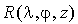
is composited from the adjustment of the vertical profile 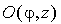
toward a correct column total amount
.
The final local O3 volume mixing ratio 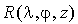
is composited from the adjustment of the vertical profile 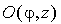
toward a correct column total amount  :
:
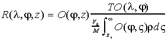 (1)
where
is the local air density 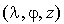,
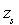
is the surface elevation  ,
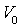
is the volume of an ideal gas at STP (standard temperature and pressure
at the sea level), and 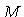
is the mean molecular weight of air. The vertical integration is over the
entire atmosphere column, where 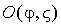
values outside of the data altitude domain 0.118-98.5 km are assumed by
homogeneous extension. Thus, at each
,
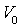
is the volume of an ideal gas at STP (standard temperature and pressure
at the sea level), and 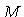
is the mean molecular weight of air. The vertical integration is over the
entire atmosphere column, where 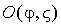
values outside of the data altitude domain 0.118-98.5 km are assumed by
homogeneous extension. Thus, at each  grid point, the vertical profile maintains a zonally symmetric shape while
its amplitude is scaled to adjust the column total amount toward the TOMS
data.
grid point, the vertical profile maintains a zonally symmetric shape while
its amplitude is scaled to adjust the column total amount toward the TOMS
data.
So far we present the vertical O3 variations as
a function of geometric altitude. For use in GCMs, it is preferred to invoke
a pressure dependence. Without the instantaneous atmospheric temperature
structure, the actual geometric altitude in unknown. For reference, we
adopt the altitude versus pressure conversion that is based on the US-1976
Standard Atmosphere using the analytic representation of Fels (1986). Thus,
we have monthly distributions of  and 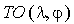,
and
and 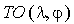,
and
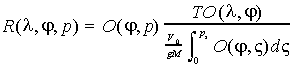 (2)
where 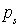 is the local surface pressure 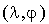, and 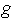 is the acceleration due to gravity. Given constants 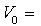 22413.6 cm3/mol, 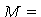 28.9644 g/mol and 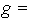 9.80616 m/s2, we have the coefficient 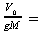 789.129 cm-STP/hPa.
For reference, Figs. 4 and 5
illustrate monthly distributions of  and
and  ,
respectively. Small differences between Figs. 1
and 4 in the overlap
domain are noticed because the latter has scaled to produce the identical
zonal mean total O3 amount as the TOMS data (Fig.
3).
,
respectively. Small differences between Figs. 1
and 4 in the overlap
domain are noticed because the latter has scaled to produce the identical
zonal mean total O3 amount as the TOMS data (Fig.
3).
The most pertinent GCM component that depends on atmospheric ozone is the radiation process. To compute the absorption in the solar and longwave radiative transfer parameterizations, ozone path lengths are needed and usually defined as (Chervin 1986):
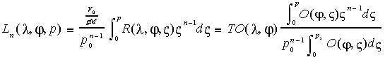 (3)
where 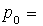
1013.25 hPa is the pressure at STP, and 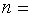
1 or 2.  is needed for solar absorption, while longwave calculations require both
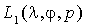
and
is needed for solar absorption, while longwave calculations require both
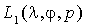
and  .
For a specific GCM application, we recommend the following procedure to
evaluate Eq. (3).
.
For a specific GCM application, we recommend the following procedure to
evaluate Eq. (3).
First, at the beginning of each calendar date, a linear interpolation
between the two nearest months is applied to calculate the representative
 and
and  distributions for that day. On the data grid mesh, two additional quantities
are computed:
distributions for that day. On the data grid mesh, two additional quantities
are computed:
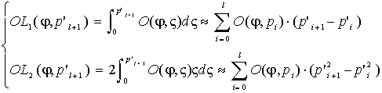 (4)
where 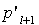 is the pressure at the lower interface of the 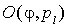 data layer that is centered at pressure 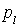. These four fields are saved for subsequent calculations of instantaneous local ozone path lengths during the entire day.
Second, at each step of radiation calculations, corresponding parameters at a specific model pressure level 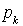 are calculated by
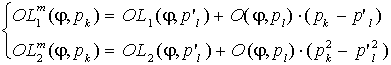 (5)
where 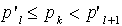,
and the superscript 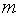
denotes for a quantity that is carried on the model pressure levels. The
adjustment of the total O3 amount toward  is represented by the scaling factors:
is represented by the scaling factors:
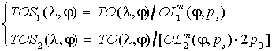 (6)
Finally, the instantaneous local ozone path lengths are given by
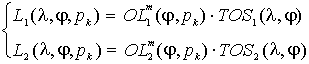 (7)
Note that the units of 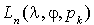
are generally in cm-STP. Through the above procedure, this is realized
as long as  is given in cm-STP and 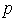
and 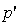
in hPa.
is given in cm-STP and 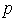
and 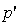
in hPa.
We have constructed a three-dimensional global, monthly mean O3 climatology using long-term records of TOMS and SAGE II satellite measurements together with ozonesonde data. Special efforts have been taken to prepare this climatology for general use in GCMs. Although it has significantly improved over the data sets that are prescribed in most of current GCMs, substantial uncertainties remain. Several issues are discussed below.
First, the latitude-altitude O3 distribution  over polar regions is almost completely obtained by extrapolation, while
the specification of local O3 vertical profiles through
adjustment of
over polar regions is almost completely obtained by extrapolation, while
the specification of local O3 vertical profiles through
adjustment of  toward correct column total amount
toward correct column total amount  is arbitrary. These however are not likely to be resolved in the near future
due to the data limitation. Second, above 57.5 km, the log-linear altitude
extrapolation toward the AFGL upper boundary condition is questionable.
As Keating et al. (1987) showed, the ultraviolet instrument aboard the
solar mesosphere explorer satellite (Barth et al. 1983) observed O3
volume mixing ratio minima near 0.02 hPa (approximately 75 km). This has
not been incorporated in the present
is arbitrary. These however are not likely to be resolved in the near future
due to the data limitation. Second, above 57.5 km, the log-linear altitude
extrapolation toward the AFGL upper boundary condition is questionable.
As Keating et al. (1987) showed, the ultraviolet instrument aboard the
solar mesosphere explorer satellite (Barth et al. 1983) observed O3
volume mixing ratio minima near 0.02 hPa (approximately 75 km). This has
not been incorporated in the present  climatology. Perhaps the most pertinent problem with the 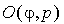
distribution lies in the vertical domain near the tropopause and in the
troposphere, where scarce and inhomogeneous soundings are used. In particular,
the radiative forcing and the climatic effect of O3
change indicate the greatest sensitivity in the vicinity of the tropopause
(Wang et al. 1980; Lacis et al. 1990), which is just at the transition
level from direct sounding to satellite data. Third, the
climatology. Perhaps the most pertinent problem with the 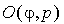
distribution lies in the vertical domain near the tropopause and in the
troposphere, where scarce and inhomogeneous soundings are used. In particular,
the radiative forcing and the climatic effect of O3
change indicate the greatest sensitivity in the vicinity of the tropopause
(Wang et al. 1980; Lacis et al. 1990), which is just at the transition
level from direct sounding to satellite data. Third, the  climatology includes the perturbations caused by the eruption of the El
Chichon in 1982 and Mount Pinatubo in 1991 as well as the systematic measurement
biases due to a failure of the TOMS instrument from May 1991 onward (WMO
1994). All of these may affect the representativeness of the climatology.
climatology includes the perturbations caused by the eruption of the El
Chichon in 1982 and Mount Pinatubo in 1991 as well as the systematic measurement
biases due to a failure of the TOMS instrument from May 1991 onward (WMO
1994). All of these may affect the representativeness of the climatology.
It is therefore important to continue refinements using more contemporary measurements. Recently, comprehensive and long-term records of high quality ozonesonde data have been archived (Logan 1994; Bojkov et al. 1995). The TOMS version 7 data set of total O3 amount is now available, which extends the record period from November 1979 through April 1993 and have corrected several version 6 biases (McPeters et al. 1996). Currently, Earth Probe TOMS and ADEOS TOMS provide near real-time total O3 amount data. Meanwhile, the SAGE II O3 profile measurements continue to the present. In addition, the scheduled SAGE III lunch in 1998 will augment such measurements and resolve the O3 vertical structure up to 85 km. Appropriate processing and the merging of all these data sets are warranted to construct an improved O3 climatology.
We thank J.A. Logan for providing the tropospheric ozone distribution. We appreciate the NASA/Goddard Space Flight Center Ozone Processing Team for preparing and making available the TOMS and SAGE satellite data sets. The research was supported by the Environmental Research Division/Department of Energy and the Climate Dynamics/National Science Foundation.
Barth, C.A., D.W. Rusch, R.J. Thomas, G.H. Mount, G.J. Rottman, G.E. Thomas, R.W. Sanders, and G.M. Lawrence, 1983: Solar Mesosphere Explorer: Scientific objectives and results. Geophys. Res. Lett., 10, 237-240.
Bhartia, P.K., K.F. Flenk, C.K. Wong, D. Gordon, and A.J. Fleig, 1984: Intercomparison of the Nimbus 7 SBUV/TOMS total ozone data sets with Dobson and M83 results. J. Geophys. Res., 89, 5239-5247.
Bojkov, R.D., L. Bishop, and V.E. Fioletov, 1995: Total ozone trends from quality-controlled ground-based data (1964-1994). J. Geophys. Res., 100, 25867-25876.
Bojkov, R.D., C.L. Mateer, and A.L. Hansson, 1988: Comparison of ground-based and TOMS total ozone meaasurements used in assessing the performance of the Global Ozone Observing System (GO3OS). J. Geophys. Res., 93, 9525-9533.
Bower, F.A., and R.B. Ward (Eds.), 1982: Stratospheric Ozone and Man. Vol. I, 216 pp, and Vol. II, 263 pp, CRC Press, Boca Raton, Fl.
Bowman, K.P., 1988: Global trends in total ozone. Science, 239, 48-50.
Bowman, K.P., and A.J. Krueger, 1985: A global climatology of total ozone from the Nimbus 7 Total Ozone Mapping Spectrometer. J. Geophys. Res., 97, 7603-7612.
Chervin, R.M., 1986: Interannual variability and seasonal climate predictability. J. Atmos. Sci., 43, 233-251.
Cunnold, D., W.P. Chu, R.A. Barnes, M.P. McCormick, and R.E. Veiga, 1989: Validation of SAGE II ozone measurements. J. Geophys. Res., 94, 8447-8460.
Dopplick, T.G., 1974: Radiative heating in the atmosphere. In The General Circulation of the Tropical Atmosphere and Interactions with Extratropical Latitudes, Vol. 2., R.E. Newell, J.W. Kidson, D.G. Vincent, and G. J. Boer (Eds.), M.I.T. Press, Cambridge, MA, pp. 1-25.
Dütsch, H.U., 1978: Vertical ozone distribution on a global scale. Pure Appl. Geophys., 116, 511-529.
Fels, S.B., 1986: Analytic representations of standard atmosphere temperature profiles. J. Atmos. Sci., 43, 119-221.
Gates, W.L., 1992: AMIP: The Atmospheric Model Intercomparison Project. Bull. Amer. Met. Soc., 73, 1962-1970.
Hansen, J.E., A. Lacis, R. Ruedy, M. Sato, and H. Wilson, 1993: How sensitive is the worldís climate? National Geographic Research and Exploration, 9, 142-158.
Hering, W.S., and T.R. Borden, Jr., 1965: Mean distributions of ozone density over North America, 1963-1964. Environ. Res. Paper 162, U.S. Air Force Cambridge Research Laboratory, Hanscom Field, Bedford, MA, 19 pp.
Herman, J.R., R. Hudson, R. McPeters, R. Stolarski, Z. Ahmad, X.-Y. Gu, S. Taylor, and C. Wellemeyer, 1991: A new self-calibration method applied to TOMS/SBUV backscatterred ultraviolet data to determine long term global ozone change. J. Geophys. Res., 96, 7531-7546.
Keating, G.M., D.F. Young, and M.C. Pitts, 1987: Ozone reference models for CIRA. Adv. Space Res., 7, 105-115.
Lacis, A.A., D.J. Wuebbles, and J.A. Logan, 1990: Radiative forcing of climate by changes in the vertical distribution of ozone. J. Geophys. Res., 95, 9971-9981.
Liang, X.-Z., and W.-C. Wang, 1995: A GCM study of the climate effect of 1979-1992 ozone trend. In Atmospheric Ozone as a Climate Gas, W.-C. Wang and I.S.A. Isaksen (Eds.), NATO ASI Series, Vol. I 32, Springer-Verlag Berlin Heidelberg, pp. 259-288.
Logan, J.A., 1985: Tropospheric ozone: Seasonal behavior, trends, and anthropogenic influences. J. Geophys. Res., 90, 10463-10482.
Logan, J.A., 1994: Trends in the vertical distribution of ozone: An analysis of ozonesonde data. J. Geophys. Res., 99, 25553-25585.
London, J., R.D. Bojkov, S. Oltmans, and J.I. Kelley, 1976: Atlas of the global distribution of total ozone, July 1957-June 1967. NCAR Tech. Note 113+STR, National Center for Atmospheric Research, Boulder, CO.
McClatchey, R.A., W. Fenn, J.E.A. Selby, F.E. Volz, and J.S. Garing, 1971: Optical properties of the atmosphere. AFGL-71-0279, Air Force Cambridge Research Laboratories, Hanscom Air Force Base, Bedford, MA, 85 pp.
McCormick, M.P., R.E. Veiga, and W.P. Chu, 1992: Stratospheric ozone profile and total ozone trends derived from the SAGE I and SAGE II data. Geophys. Res. Lett., 19, 269-272.
McCormick, M.P., J.M. Zawodny, R.E. Veiga, J.C. Larsen, and P.H. Wang, 1989: An overview of SAGE I and II ozone measurements. Planetary Space Sci., 37, 1567-1586.
McPeters, R.D., P.K. Bhartia, A.J. Krueger, J.R. Herman, B.M. Schlesinger, C.G. Wellemeyer, C.J. Seftor, G. Jaross, S.L. Taylor, T. Swissler, O. Torres, G. Labow, W. Byerly, and R.P. Cebula, 1996: Nimbus-7 Total Ozone Mapping Spectrometer (TOMS) Data Producrs Userís Guide. NASA Reference Publication, 1384, National Aeronautics and Space Administration, Washington, DC.
McPeters, R.D., D.F. Heath, and P.K. Bhartia, 1984: Averaged ozone profiles for 1979 from the Nimbus 7 SBUV instrument. J. Geophys. Res., 89, 5199-5214.
McPeters, R.D., and W.D. Komhyr, 1991: Long-term changes in the Total Ozone Mapping Spactrometer relative to world standard Dobson Spectrometer 83. J. Geophys. Res., 96, 2987-2993.
McPeters, R.D., A.J. Krueger, P.K. Bhartia, J.R. Herman, A. Oakes, Z. Ahmad, R.P. Cebula, B.M. Schlesinger, T. Swissler, S.L. Taylor, O. Torres, and C.G. Wellemeyer, 1993: Nimbus-7 Total Ozone Mapping Spectrometer (TOMS) Data Producrs Userís Guide. NASA Reference Publication, 1323, National Aeronautics and Space Administration, Washington, DC.
Oltmans, S.J., and W.D. Komhyr, 1986: Surface ozone distributions and variations from 1973-1984 measurements at the NOAA Geophysical Monitoring for Climatic Change Baseline Observatories. J. Geophys. Res., 91, 5229-5236.
Phillips, T.J., 1994: A Summary Documentation of the AMIP Models. PCMDI Report No. 18, PCMDI/LLNL, California, 343 pp.
Rosenfield, J.E., M.R. Schoeberl, and M.A. Geller, 1987: A computation of the stratospheric diabatic circulation using an accurate radiative transfer model. J. Atmos. Sci., 44, 859-876.
Spivakovsky, C.M., R. Yevich, J.A. Logan, S.C. Wofsy, and M.B. McElroy, 1990: Tropospheric OH in a three-dimensional chemical tracer model: An assessment based on observations of CH3CCl3. J. Geophys. Res., 95, 18441-18471.
Stolarski, R.S., P. Bloomfield, R.D. McPeters, and J.R. Herman, 1991: Total ozone trends deduced from Nimbus-7 TOMS data. Geophys. Res. Lett., 18, 1015-1018.
Wang, W.-C., X.-Z. Liang, M.P. Dudek, D. Pollard, and S.L. Thompson, 1995: Atmospheric ozone as a climate gas. Atmos. Res., 37, 247-256.
Wang, W.-C., J.P. Pinto, and Y.L. Yung, 1980: Climatic effects due to halogenated compounds in the Earth's atmosphere. J. Atmos. Sci., 37, 333-338.
Wilcox, R.W., and A.D. Belmont, 1977: Ozone concentration by latitude, altitude, and month near 80 degrees West. Report No. FAA-AEQ-77-13, FAA Office of Environmental Qality, High Altitude Pollution Program, U.S. Department of Transportation, Whashington, D.C., 41 pp.
WMO, 1993: Atlas of GO3OS Total Ozone Maps for the European Arctic Stratospheric Ozone Experiment. World Meteorological Organization, TD-517, Geneva.
WMO, 1994: Scientific Assessment of Ozone Depletion: 1994. World Meteorological Organization, Global Ozone Research and Monitoring Project, Report No. 37, Geneva.
UCRL-MI-125650